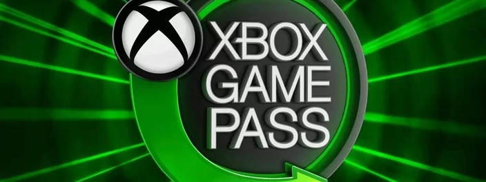
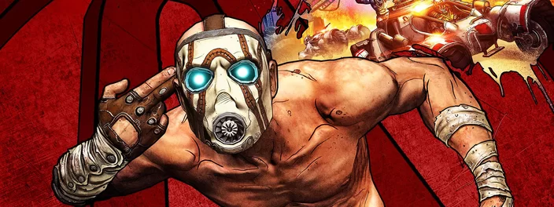

Se você perdeu as novidades da Nintendo Direct Partner Showcase de hoje (21), confira o resumão com todos os anúncios para o Nintendo Switch, incluindo jogos e atualizações de desenvolvedoras parceiras da gigante japonesa.
Quem diria que um jogo como serviço da PlayStation Studios, lançado simultaneamente para PlayStation 5 e PC, alcançaria tanto sucesso a ponto de se tornar o maior lançamento da Sony no PC? Pasmem: ele superou até mesmo o recorde de God of War, uma das pratas da casa.
Ler mais

Xbox Game Pass receberá RPG aclamado e mais 6 jogos; confira a lista!
O catálogo do Xbox Game Pass não para de crescer, trazendo uma enxurrada de novas aventuras todos os meses para os assinantes. A gigante norte-americana revelou, nesta terça-feira (20), os jogos que chegarão ao serviço de assinatura da Microsoft na reta final de fevereiro.
Ler mais

A aguardada adaptação de Borderlands ganhou suas primeiras imagens oficiais e um trailer, apresentando os visuais do longa-metragem. Em colaboração com a Lionsgate, a People divulgou duas fotos na última terça-feira (20), destacando Cate Blanchett como Lilith e outros integrantes do elenco principal.
Leslie Benzies, ex-presidente da Rockstar North e produtor responsável por jogos como GTA e Red Dead Redemption, deixou a empresa em 2016. Dois anos depois, em 2018, o executivo fundou seu próprio estúdio, o Build a Rocket Boy, que está enfrentando uma onda de demissões em massa atualmente.
Ler mais